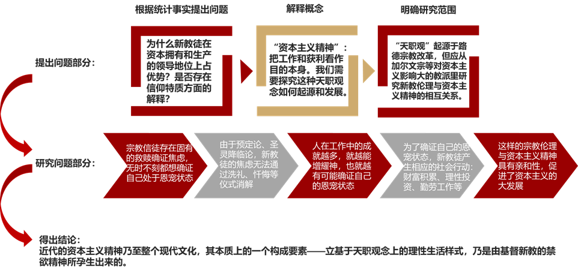

“社会学概论”课程的读书笔记：没人比我更懂韦伯！
Chaosls 投稿 全文仅供学习参考
一、引言
马克斯·韦伯的《新教伦理与资本主义精神》于1904-1905年发表于德国《社会科学和社会政策文库》。这篇经典著作从“基督新教徒于资本拥有与领导地位上占了较重分量”的统计事实出发，探讨了新教信仰与促进“自由劳动的理性组织之市民经营资本主义”发展壮大的“资本主义精神”之间的亲和性，向人们揭示了近代资本主义社会发展重要的精神与文化动力。[1]1958年，美国社会学家帕森斯将这本著作翻译成英文在美国出版，韦伯的学术思想因此成为二战后世界社会学界研究的重点。
二、内容概述
《新教伦理与资本主义精神》全书分为两个部分。
第一部分为“说明”，即对著作的研究内容进行预先说明，这一部分共有三个章节。第一章“宗教派别与社会分层”是提出问题的部分。韦伯首先提出了一个有趣的统计事实：大部分商界领袖、资本所有者以及现代企业中的高级技工、接受过高级技术和商业培训的职员，基本上都是新教教徒，而天主教徒则相反。他进而提出，应从新教信仰的独特特质出发来研究其中原因。[2]第二章“资本主义精神”是解释研究对象概念的部分。韦伯没有对“资本主义精神”直接下定义，而是以富兰克林的著作内容为例，展现了资本主义社会里广泛存在的一种以理性方式赚更多的钱与避免任何本能的生活享乐为至善的伦理规范。这种伦理规范要求人们为了劳动而劳动、为了营利而营利，并以此为天职。韦伯认为应该研究这样一种天职观如何起源，并发展成为资本主义文化中最为典型的要素之一。[3]第三章“路德的天职观：研究的课题”是确定研究范围的部分。韦伯发现，天职观念是宗教改革产物，“天职”这一概念的现代含义被路德首先明确地使用。但路德的天职观仍保持着天主教传统主义的性质。韦伯认为应以在资本主义发展史中起到重要作用的加尔文宗以及新教其他宗派为起点，来研究新教伦理与资本主义精神的相互关系。[4]
第二部分为“禁欲新教的职业伦理”，是正式研究内容。这一部分有两个章节。第一章“入世禁欲的宗教基础”描述了新教天职观的宗教基础，第二章“禁欲与资本主义”讨论了新教天职观如何影响现实世界。韦伯首先描述四类禁欲的新教教派：加尔文宗、虔信派（虔敬派）、循道宗（卫理公会）、从浸礼（再洗礼）运动中派生的诸教派。这四个教派在禁欲主义运动存在一个重要的共同之处：恩宠状态的观念。[5]基督教徒认为自己负有原罪，需要上帝的救赎，而恩宠状态就象征着一个人得到救赎。天主教教徒可以通过洗礼、忏悔等圣礼来确认自己处于恩宠状态，缓解内心渴望救赎的焦虑，但新教徒则认为这些仪式并没有这种功能。[6]加尔文宗、虔信派、循道宗都持“预定论”的立场，认为人是否能得到救赎，是亘古开天辟地以来神就预先确定好了的，人在俗世的各种行为——洗礼、忏悔、行善事——都不能影响神的预定。而人本身因为无知，不可能知道自己是否被神选中。浸礼运动各派虽然反对预定论，但也相信类似的“圣灵降临论”，人无法确定自己是否被圣灵降临从而无法确证自己恩宠状态。由于无法确证自己处于恩宠状态，新教徒内心中存在不可彻底解决的救赎焦虑。为了缓解焦虑，信徒必须虔诚地相信自己处于恩宠状态，牢牢把握神赐予人的天职，恪尽职守，通过职业成就来增耀神。[7]而按照新教教义，神预定某人得到救赎，或圣灵降临在某人身上，就是要通过此人展现神的荣耀。当被赋予天职的人越能通过职业成就展现神的荣耀，那么他就越有可能是得到救赎的人。为了通过自己的职业成就来确认自己处于恩宠状态，新教徒的心里因而产生理性审视自己的生活方式的动机以及将生活禁欲化的驱动力，一切都为了履行神赋予的天职并不断取得更高的成就。[8]新教徒坚信，履行天职以增添财富是神的命令，正如仆人应该增加主人托付给他的银子，而贫穷和耗费神的财富来让人享乐则有损神的荣光。因此新教徒实际上对自己的财富负有义务，其生活被高度理性化以追求最多的营利。[9]生产也在新教徒的实践中被不断理性化，缩减成本、扩大利润成为每个新教企业家的义务，而恪尽职守、提高劳动效率和尽量延长劳动时间则成为每个新教工人的义务。简言之，新教的天职观、禁欲伦理与资本主义精神存在极强的亲和性，极大地促进了理性营利的资本主义生产方式在世界范围内的扩展。而当资本主义世界成熟壮大后，即使人们不再有像过去新教徒那样的宗教虔诚，也不得不学习和奉行这样的资本主义精神，否则就会被市场淘汰。
三、对本书研究方法的分析
《新教伦理与资本主义精神》堪称社会科学研究中经典中的经典。其研究流程极其严谨，其思路过程十分清晰。如下图所示：

图1 韦伯研究过程图示 来源：根据书本内容用PPT作图
从提出问题、研究问题到得出结论，韦伯的研究路径明确、逻辑顺畅。在提出问题时，韦伯是根据他的学生欧芬巴哈（Martin Offenbacher）论文中对德国一些地区不同信仰人数比例、不同信仰课税对象资本额、不同信仰受教育情况的统计事实提出的。[10]通过有力的数据支持，韦伯所提出的研究问题就具有了重要的研究意义。
在具体的研究方法上，韦伯则通过“理想型”的方法，将研究的对象可操作化。要进行研究，首先要明确研究的对象，界定研究的范围。“新教伦理”、“资本主义精神”这两个概念在现实中内容丰富，很难具体化，而且在不同的读者心里也存在不同的理解，因此要直接研究这些概念就如同直接研究一个混沌的世界，是不可能的。但通过“理想型”的研究方法，韦伯将这两个内涵复杂、难以研究的概念变得清晰易懂，从无序的混沌变为有序的图示，为整篇研究找到了具体的着眼点。除了这两个概念之外，韦伯在研究新教各教派的具体宗教伦理时，也运用了“理想型”的方法。由于新教教派的历史太过复杂，因此不能为其在历史现实中划出泾渭分明的界限。因此韦伯希望“借着研究其最为首尾一贯”的形态来找出其独特的作用。[11]
值得注意的是，韦伯研究的对象是新教伦理与资本主义精神之间的“亲和性”（德语verwandtschaft），而不是机械性、决定性的因果关系。韦伯明确指出，他“无意主张荒谬而教条式的命题”。[12]他不认为“资本主义精神”只能够是宗教改革的某些影像的结果，或认为资本主义经济体制是宗教改革的产物。所谓新教伦理与资本主义精神之间的“亲和性”，仅仅意味着资本主义精神在世界上的形成与扩张过程有宗教影响的参与，资本主义精神的一些具体层面可以溯源到宗教影响。新教伦理的存在让资本主义精神更容易得到发展，而不是简单的新教伦理为因，资本主义精神为果。因果关系可以看作是某种具体的亲和关系，但不能和亲和关系本身混淆。
在整篇研究中，韦伯严守价值中立，没有进行价值判断。对于新教禁欲的宗教伦理以及与之亲和的资本主义精神和因此发展壮大的理性营利资本主义，韦伯一直在进行客观陈述，没有对其进行价值判断。尽管韦伯在文中流露出一种对于人们生活在资本主义理性化社会的“铁笼”中的担忧，但他还是明确表示，他不会在文中涉入价值判断或信仰批判，因为“这是纯粹历史陈述的论文所不该承担的。”[13]价值判断和经验分析两者本质不同，却很容易被人混淆。社会科学是关于实在的经验的认识的科学，不能也不应承担价值判断的任务，应保持科学认识的客观性和中立性，这也正是韦伯在其关于社会科学方法论的论文《社会科学和经济科学“价值无涉”的意义》中不断强调的。[14]
四、本书研究内容的意义
除了经典的研究方法之外，这篇研究本身的内容也十分有意义。
从最宏观的层面——文化角度来看，本书揭示了很长一段历史时期中社会价值观的变化过程。在新教伦理的支持下，资本主义精神这一理性营利的价值观逐渐发展壮大，基本上取代了过去天主教传统主义的价值观。这样一种资本主义精神成为了支撑资本主义社会制度的文化内核，而随着资本主义经济秩序支配了人类社会，虽然宗教的热情已经消散，但这种资本主义精神已经获得了无穷的生命力，支配了世俗的道德，并强迫新加入社会中的个体在社会化过程中习得这种精神。可以看出，文化有变化性——理性的价值观取代传统主义的价值观，也有稳定性——资本主义精神支配世俗道德后，通过个体的社会化强化这种文化。
韦伯对于“理性化”的论述也非常深刻。由韦伯的研究结果来看，社会从传统主义向理性科层制方向发展的过程首先从个人开始。当新教徒以“增耀神”为终极目标之后，他们开始将自己的生活理性化，一切都为了精打细算尽可能营利。这样一种理性化是相对于终极目标——价值理性来说的，对于坚守传统主义的天主教徒，新教徒的行为简直不可理喻。新教徒对自己生活的理性化恰好契合了资本主义精神，又符合资本主义生产扩展的需要，最后的结果就是：新教徒在资本主义的世界中成为赢家，而这些赢家又进一步促进了资本主义经济秩序的扩展。虽然韦伯认为这样一种理性主义在经济以外的其它领域发展之间的关系仍需要研究，但这样一种理性化的经济秩序需要什么样的政治秩序、社会秩序以维持稳定和持续发展，其实是显而易见的。例如学术领域的发展就很能显示出一种理性化的力量：自然科学领域的理性分析方式无需多论，在社会科学领域，最典型的就是经济学领域，其理论假设的“经济人”，其实就是一种“理想型”的新教徒。而随着定量的研究方法从经济学向其它社会科学领域扩散，这样一种理性假设也在不断扩散。例如国际关系学科中，许多理论都会将国家进行理性假设，认为国家永远只会进行理性决策以追求利益——类似于“经济人”只会另行决策来营利。包括学术领域在内的其它社会领域如何受到影响，都是值得我们进一步研究的。
五、总结与思考
韦伯通过严谨的社会学研究方法，揭示了新教伦理与资本主义之间的亲和性，揭示了新教的宗教特质人类社会发展的重要影响：新教伦理让禁欲的思想从修道院走向俗世。新教徒从教会的压迫下解放出来，又因为救赎确证的焦虑而自我束缚，让自己的生活走上了理性化以经营得利的轨道，而这刚好符合资本主义发展的需要。无论是学习社会学的研究方法还是有关资本主义发展研究内容，《新教伦理与资本主义精神》都是一本必读书目。
韦伯通过解释社会的理性化过程，揭示了他对社会现代化的理解：人被囚禁在理性制度的“铁笼”中，成为了社会机器中的一个齿轮。[15]即使人们没有过去那种导向理性生活方式的新教信仰，但也不得不被市场的游戏规则驯化，被迫采取理性化的生活方式。这种悲观的看法与以涂尔干为代表的乐观看法不同。涂尔干的“有机团结”概念认为在社会分工扩大的过程中，个人的价值和尊严得到突出体现，人们追求的不是同一性而是差异性。这样的“有机团结”现代社会发扬人的个性，使人“成为个人”。[16]但在韦伯设想的“铁笼”里，个人却不再重要，因为市场需要的不是具体的某个人，而是遵守市场规则的一类人，正如一个机器需要的不是某个独特的齿轮来运转，而只需要一个合适的齿轮来运转。理性化的现代社会到底是发扬了人的个性，还是在扼杀人的个性？这是一个值得我们不断探究的问题。
[[1]][德]马克斯·韦伯著，康乐、简惠美译：《新教伦理与资本主义精神》，桂林：广西师范大学出版社2007年版，前言第10页、13页，正文第12页。
[2] 同上书，正文第10页。
[3]同上书，正文第24-27页，第51页。
[4] 同上书，正文第57页，第69页。
[5]基督教的“恩宠状态”与“自然状态”相对，是一种灵魂被上帝救赎、免于原罪的状态。“自然状态”则是身负原罪，象征着肉体堕落的状态。例如《新约·罗马书》第三章23-24节写道：因为世人都犯了罪，亏缺了神的荣耀。如今却蒙神的恩典，因基督耶稣的救赎，就白白地称义。
[6] 同上书，正文第88页。
[7] 同上书，正文第100-104页。
[8] 同上书，正文第146页。
[9] 同上书，第157-160页。
[10] 同上书，正文第10页
[11] 同上书，正文第77页。
[12] 同上书，正文第68页。
[13] 同上书，正文第188页。
[14] [德]马克斯·韦伯著，韩水法、莫茜译：《社会科学方法论》，北京：商务印书馆2017年版。
[15] 《新教伦理与资本主义精神》，正文第187页。
[16] [法]涂尔干：《社会分工论》，渠东译，北京：生活·读书·新知三联书店2000年版，第140页。